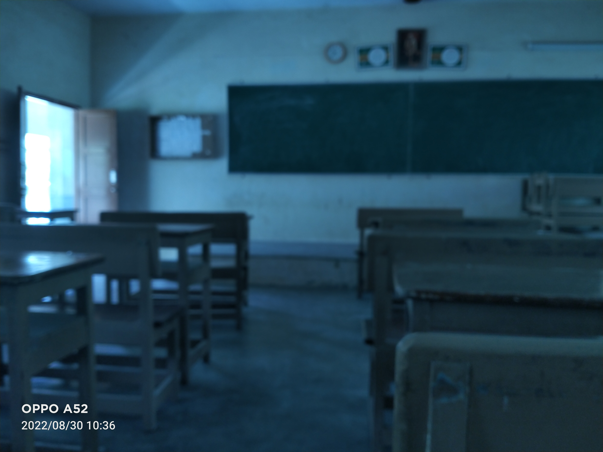
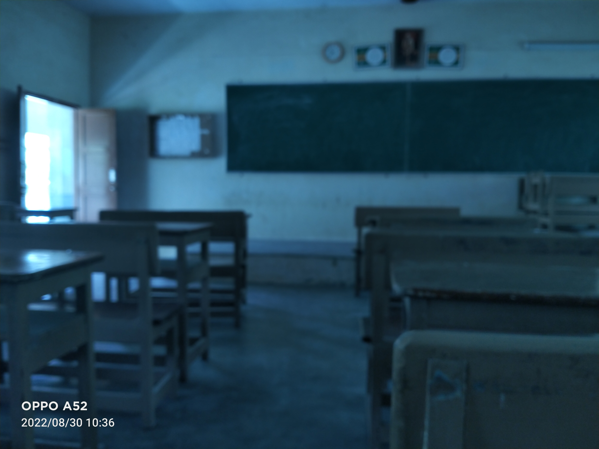

PORTFOLIO
INDOOR NAVIGATION USING UWB
The project aims to provide precise location tracking and navigation services for users within a building using Ultra Wide Band (UWB) technology. A multidisciplinary team of researchers and engineers with expertise in fields such as computer science, electrical engineering, and geomatics will conduct extensive research on UWB technology, indoor navigation, and building management systems to design and develop the navigation system. The system is expected to provide reliable and precise navigation to users within the building, which can be useful for a wide range of applications such as wayfinding for visitors, asset tracking for facilities management, and emergency response. Additionally, the integration with other building systems will provide a more seamless and efficient building management experience.


NAVIT - IPS SOFTWARE
Software Project Showcase: NAVIT
Welcome to the showcase of our revolutionary project, the NAVIT. This innovative mobile application leverages Ultra-Wideband (UWB) technology to redefine indoor navigation and tracking within buildings. Our app is a game-changer for visitors, facility management, and emergency response, offering a seamless user experience.
Key Features:
- High-Precision Tracking: Utilizing UWB technology, our app offers unparalleled accuracy in tracking users' indoor locations. This is crucial for smooth navigation and efficient resource allocation.
- Real-Time Navigation: Dynamic real-time navigation guides users with step-by-step directions. Shifting maps and dynamic path updates ensure hassle-free movement to desired destinations.
- Integration with Building Systems: Our app seamlessly interfaces with building systems, enhancing asset tracking, security management, and overall operational efficiency.
Functionalities:
- Owner Side:
- Area Cropping: Define specific zones for tracking and navigation, optimizing space utilization.
- Sensor Placement Aid: Assist in strategically positioning sensors for optimal tracking accuracy.
- Floor Level Mapping: Easily map out floor levels for comprehensive indoor navigation.
- App Side:
- Map Shifting with UWB Localization: Maps shift in real time based on UWB data, ensuring precise user positioning.
- User Side:
- Finding IPS (Indoor Positioning System): Quickly identify available indoor positioning systems.
- IPS Connection: Seamlessly connect to the IPS for accurate tracking.
- Navigation and Tracking: Effortlessly navigate to destinations and enable real-time tracking by sharing positions.
Benefits:
- Efficient Building Management: Empower owners and managers with a tool that optimizes space usage and resource allocation.
- Reliable Navigation: Users can confidently navigate indoors, relying on our app's accuracy.
- Versatile Application: Address various needs, from facilities management to emergency response and visitor navigation.
Future Roadmap:
- Enhanced Accuracy: Our commitment to precision drives ongoing improvements in accuracy and reliability.
- Deeper Integration: Seamless integration with building systems is on the horizon, creating a holistic user experience.
Join us as we transform indoor navigation. The NAVIT isn't just software; it's a leap into a future of efficient, accurate, and user-friendly indoor movement. Embrace the change today.


 
